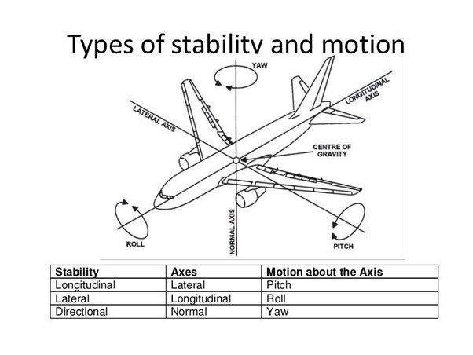
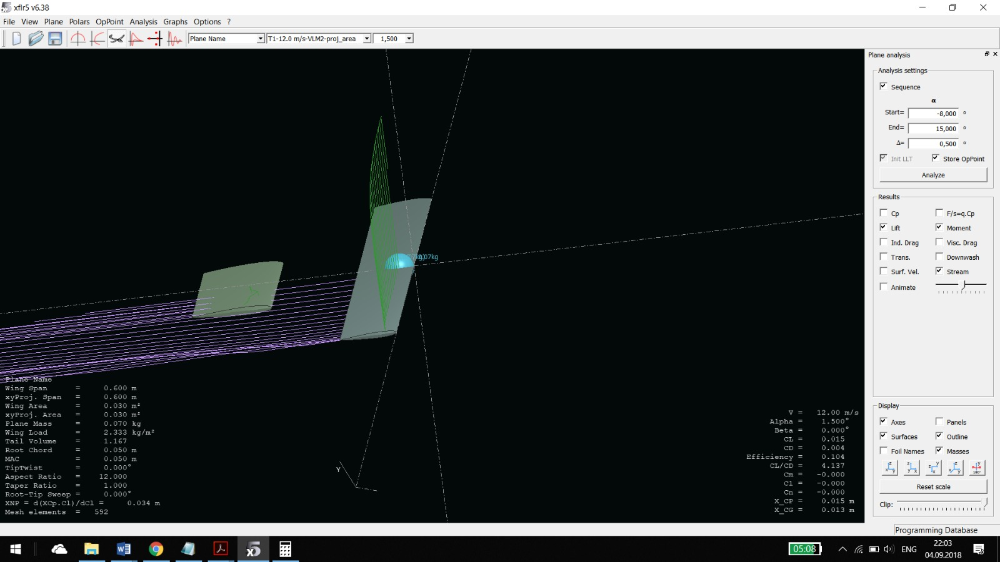
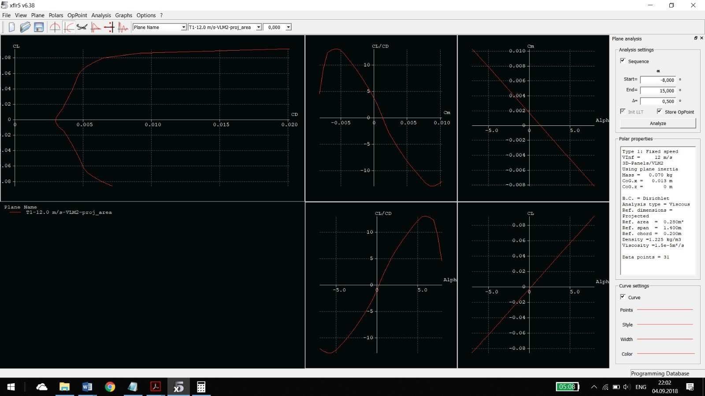
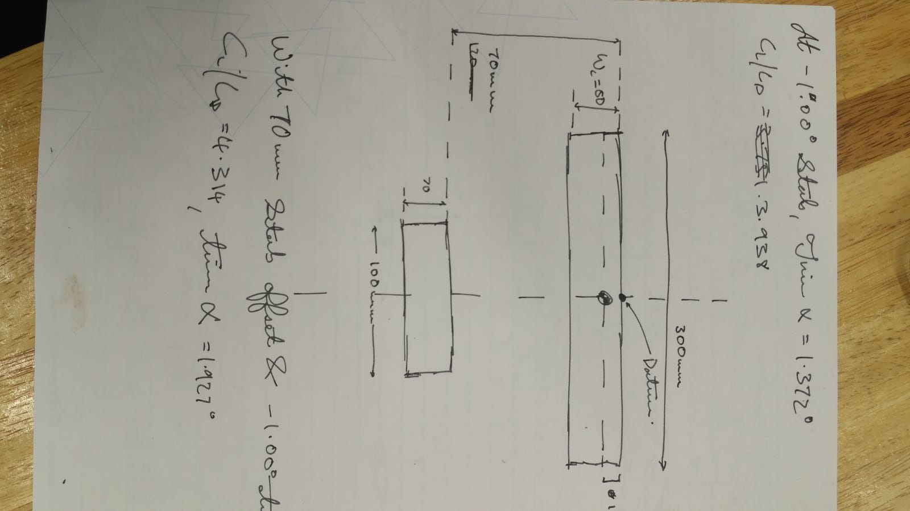
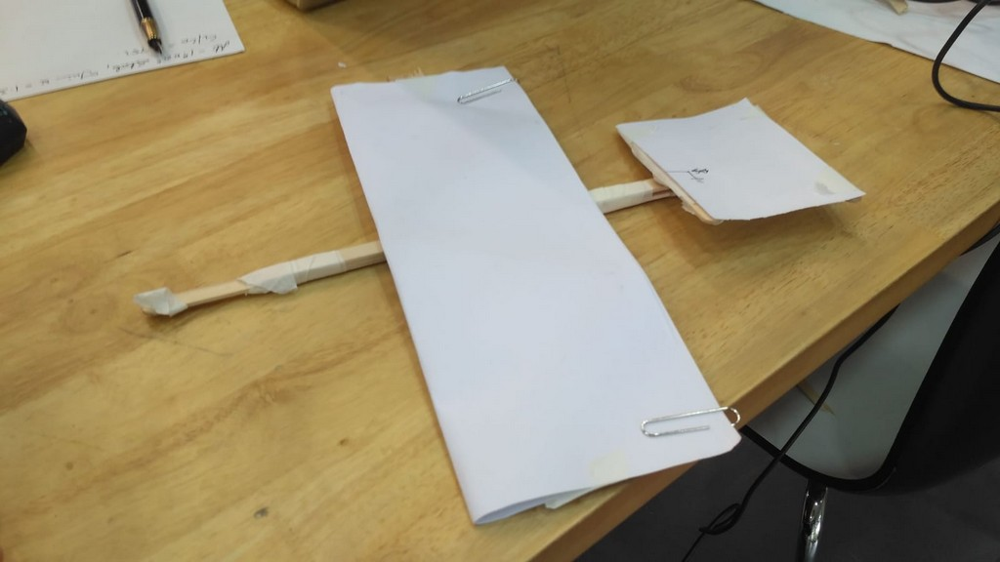
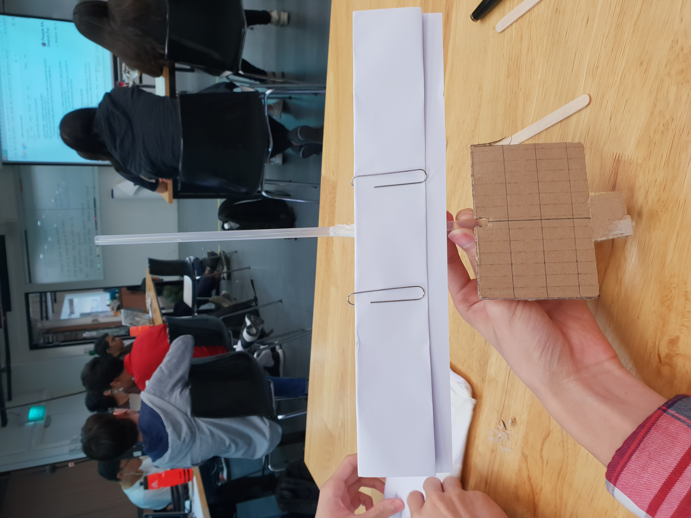

Glider Development
Resources
For glider development, we employed the use of a software called XFLR 5. This is a freeware software developed based on the XFOIL code but is capable of simulating viscous effects in 3D models by means of an interpolation feature.
The glider itself was made of materials that were easily accessible such as ice cream sticks, straws, A4 sheets of paper and also paper clips.
Design Objectives
The glider had to be able to send a A4 sized paper through the air. The Paper must arrive in a neat fashion and must have accuracy. Long distance is also a design goal. The launch process must be automated.
Some Design Considerations
Based on the design objectives, we can stipulate some basic parameters for the glider. As we would like to have some form of long range capability, our design had to have a high CL/CD ratio, as well as light weight As we would soon find out, this would be incredibly hard to achieve as we had to work with a flat piece of A4 paper.
Achieving sufficient lift was also a problem in itself due to constrained wing area available. The constrained wing area arose as a result of the neccessity to launch the glider from an automated launch platform which only could impart a certain amount of power. In the event, the motors driving the flywheel ran into some power draw issues, and even the final design (a paper plane) had problems being launched.
Finally, as a result of the requirement for accuracy, the glider had to be able to mantain both stability in all 3 axes (Longitudinal, Directional, Lateral) Unfortunately, we had barely managed to achieve any form of longitudinal stability.

First Design
Honestly, this one was the one that was rushed the most. We were rushing to get all 3 designs out for the first part of the competition, so this one was built out of a small piece of A4 paper, held together by a bunch of tape and ice cream sticks. It has an incredibly small wing area, and the tail is misplaced relative to the CG. As the person who designed this (Tristan, who is writing this segment) has minimal experience in glider design, the glider ultimately failed to fly properly, and ended up nose diving to its eventual demise on the floor.
The wing spar was comprised of a few ice cream sticks taped together, and the message (which was supposed to also be the wing), was paperclipped to the spar. This rather crude design incurred a serious weight penalty which had to be resolved in later versions of the glider.

Second Design (and how we got there)
We decided to try an approach which was not as haphazard as the one we used to design the first glider. Thus, when I went home, I decided to run some simulations to find a workable glider design. The program of choice was XFLR5, since I had played around with it a few years back and was decently familiar with the interface. The program calculated the vehicle polars, which was useful for determining stability as well as general performance. To top it off, there was a nice 3D GUI to help visualise the design as well the flow features and force vectors.
This was a 3D render of the glider model
Aerodynamic Polars for the model glider
It took a some trial and error and get a stable model (negative Cm V alpha line) I also had to use a thin, symmetrical NACA airfoil to approximate the 'flat plate' that was our A4 paper.
This was actually my first time using this software to produce a flyable glider, and there was a good chance that I had forgotten or misinterpreted something along the way (And it turns out I completely forgot about the weight issue). So when it came to actually constructing the glider, we used ice cream sticks and A4 paper again. Some hot glue had to be applied to the nose of the glider to shift the CG to 25% chord. Also, I had the conception that using paper clips to attach the 'wing' (message) would produce a system where the user could easily remove the paper when the glider landed.
After the first test flight, it was realised that the glider was still too heavy to fly, and ended up stalling out of the air, again meeting its demise with the floor. On the bright side, if thrown right, this Second version of the glider stayed in the air abit longer than the first one (which nosed dived the first chance it got), but still this design wouldnt fufill the requirements.
Rough Sketch for the glider, based on the simulation

Design 3
After the previous 2 designs, it was advised that we use a lighter material to cut the weight of the glider down, and to do so, plastic straws were employed. So during lunch, I went to grab a handful of straws from the food court and when I came back, I force-fitted them together to form the 'fuselage'. The wing spar was still made out of ice cream sticks, as we felt the straws themsleves might be abit flimsy to hold the 2 paper clips which secured paper to the spar. The spar was taped to the fuselage. As we were running short on time by then, we had to eyeball the dimensions for this glider. But we did attempt sizing similar to the previous one.
Version 3 of the glider
Upon test flying it, we realised that this new glider still had a tendency to stall out at the end part of its flight, although it could stay in the air longer than the first 2 had. Also, when we tried to throw it abit faster the glider would corkscrew and roll out of control. This was likely due to the fact that the wing spar did not extend to the end of the wing, resulting in flutter as the vehicle flew, causing a asymmetrical lift distribution across the wing that produced a rolling moment.
Conclusion
Further iterations and testing might have produced a functioning glider (we probably needed to radically overhaul the design),
but unfortunately due to the lack of time, this could not be accomplished.
Therefore, we reverted to using a paper airplane which displayed better characteristics
than all 3 designs we had.